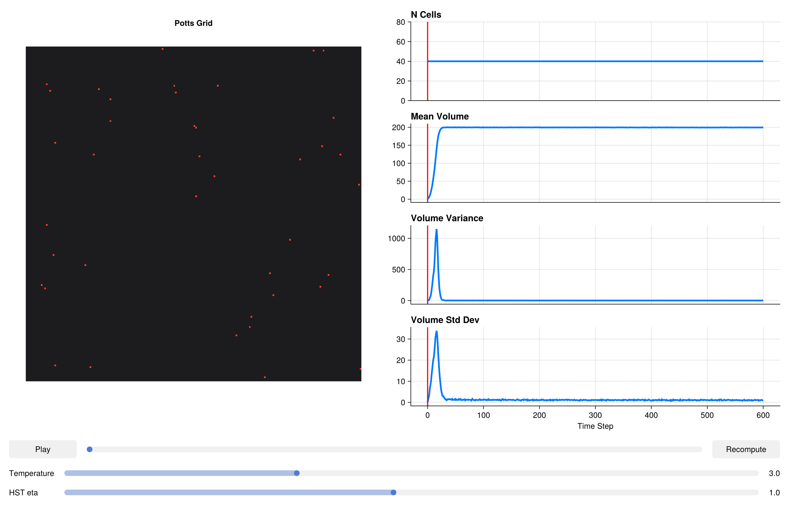

using CairoMakie
CairoMakie.activate!()Thermodynamic HST Penalties
The classic Potts volume penalty HV = λ(V - Vtarget)² is convenient but thermodynamically inconsistent at finite temperature. The problem is that it treats the target volume as a fixed external field — the cell behaves as if coupled to a spring whose other end is nailed to the wall. This violates detailed balance for the fluctuations of V_target itself: if the target can evolve (e.g., after growth or mitosis), the equilibrium distribution of actual volumes does not match a Boltzmann distribution at temperature T.
The Homeostatic Stochastic Trapping (HST) penalty fixes this by modelling the target volume as an Ornstein–Uhlenbeck (OU) process that relaxes toward the actual volume with a timescale controlled by eta (η). In the limit η → 0, the HST penalty converges to the classical quadratic. For η > 0, the equilibrium distribution of volumes is Gaussian with a variance that depends correctly on both T and λ — satisfying detailed balance and giving physically correct thermal fluctuations.
Practical recommendation: use HSTVolumeComponent (and the analogous HST surface area component) whenever your simulation is quantitative or when volume fluctuations are an observable of interest. The overhead compared to the classical quadratic is negligible.
Packages
using PottsToolkit
using MakiePotts
using Statistics: mean, std, varCell Types
CellA = CellType(:CellA)
Medium = CellType(:Medium, is_background = true)CellType(:Medium, true)Classical System (Reference)
VolumeComponent uses the standard quadratic penalty H = λ(V−V₀)². We use this as the baseline against which HST is compared.
sys_classical = PottsSystem(
cell_types = [Medium, CellA],
penalties = [
VolumeComponent(CellA => (λ = 5.0f0, target = 200)),
AdhesionComponent(
(CellA, CellA) => 2.0f0,
(CellA, Medium) => 16.0f0
)
]
)PottsSystem{Tuple{}}(CellType[CellType(:Medium, true), CellType(:CellA, false)], Any[VolumeComponent{Rigid}(Dict{CellType, @NamedTuple{target::Float32, λ::Float32}}(CellType(:CellA, false) => (target = 200.0, λ = 5.0))), AdhesionComponent{Rigid, false}(Dict{Tuple{CellType, CellType}, Float32}((CellType(:CellA, false), CellType(:CellA, false)) => 2.0, (CellType(:Medium, true), CellType(:CellA, false)) => 16.0))], (), 10)HST System
HSTVolumeComponent takes the same per-cell-type (λ, target) parameters as VolumeComponent, plus a global eta (η) that sets the OU relaxation rate. η has units of inverse MCS; η = 1.0 means the OU process relaxes fully within ~1 MCS, which is appropriate for well-mixed simulations. η = 0.1 gives slower relaxation, suitable when cells grow on timescales of tens of MCS.
SurfaceAreaComponent is included to constrain cell shape alongside volume, giving a more realistic mechanical phenotype.
sys_hst = PottsSystem(
cell_types = [Medium, CellA],
penalties = [
HSTVolumeComponent(CellA => (λ = 5.0f0, target = 200); eta = 1.0),
SurfaceAreaComponent(CellA => (λ = 1.0f0, target = 60)),
AdhesionComponent(
(CellA, CellA) => 2.0f0,
(CellA, Medium) => 16.0f0
)
]
)PottsSystem{Tuple{}}(CellType[CellType(:Medium, true), CellType(:CellA, false)], Any[HSTVolumeComponent{Rigid}(Dict{CellType, @NamedTuple{target::Float32, λ::Float32}}(CellType(:CellA, false) => (target = 200.0, λ = 5.0)), 1.0f0), SurfaceAreaComponent{Rigid}(Dict{CellType, @NamedTuple{target::Float32, λ::Float32}}(CellType(:CellA, false) => (target = 60.0, λ = 1.0)), 1.0f0), AdhesionComponent{Rigid, false}(Dict{Tuple{CellType, CellType}, Float32}((CellType(:CellA, false), CellType(:CellA, false)) => 2.0, (CellType(:Medium, true), CellType(:CellA, false)) => 16.0))], (), 10)Problems
Identical grid, cell count, and run length for a fair comparison. Both systems get the same random seed via the same algorithm.
prob_classical = PottsProblem(
sys_classical,
Dict(CellA => 40),
(200, 200);
tspan = (0, 600),
topology = VonNeumannTopology{2}()
)
prob_hst = PottsProblem(
sys_hst,
Dict(CellA => 40),
(200, 200);
tspan = (0, 600),
topology = VonNeumannTopology{2}()
)
alg = CheckerboardMetropolis(T = 3.0f0, sweeps_per_step = 10)
sol_classical = solve(prob_classical, alg; saveat = 6)
sol_hst = solve(prob_hst, alg; saveat = 6)retcode: Success
Interpolation: No interpolation
t: 101-element Vector{Int64}:
0
6
12
18
24
30
36
42
48
54
⋮
552
558
564
570
576
582
588
594
600
u: 101-element Vector{Any}:
(grid = UInt32[0x00000000 0x00000000 … 0x00000000 0x00000000; 0x00000000 0x00000000 … 0x00000000 0x00000000; … ; 0x00000000 0x00000000 … 0x00000000 0x00000000; 0x00000000 0x00000000 … 0x00000000 0x00000000], cell_data = @NamedTuple{volumes::Int32, target_volumes::Int32, cell_types::UInt8, target_surface_areas::Int32, pressures::Float32, surface_areas::Int32, tensions::Float32}[(volumes = 1, target_volumes = 200, cell_types = 0x01, target_surface_areas = 60, pressures = 0.0, surface_areas = 4, tensions = 0.0), (volumes = 1, target_volumes = 200, cell_types = 0x01, target_surface_areas = 60, pressures = 0.0, surface_areas = 4, tensions = 0.0), (volumes = 1, target_volumes = 200, cell_types = 0x01, target_surface_areas = 60, pressures = 0.0, surface_areas = 4, tensions = 0.0), (volumes = 1, target_volumes = 200, cell_types = 0x01, target_surface_areas = 60, pressures = 0.0, surface_areas = 4, tensions = 0.0), (volumes = 1, target_volumes = 200, cell_types = 0x01, target_surface_areas = 60, pressures = 0.0, surface_areas = 4, tensions = 0.0), (volumes = 1, target_volumes = 200, cell_types = 0x01, target_surface_areas = 60, pressures = 0.0, surface_areas = 4, tensions = 0.0), (volumes = 1, target_volumes = 200, cell_types = 0x01, target_surface_areas = 60, pressures = 0.0, surface_areas = 4, tensions = 0.0), (volumes = 1, target_volumes = 200, cell_types = 0x01, target_surface_areas = 60, pressures = 0.0, surface_areas = 4, tensions = 0.0), (volumes = 1, target_volumes = 200, cell_types = 0x01, target_surface_areas = 60, pressures = 0.0, surface_areas = 4, tensions = 0.0), (volumes = 1, target_volumes = 200, cell_types = 0x01, target_surface_areas = 60, pressures = 0.0, surface_areas = 4, tensions = 0.0) … (volumes = 1, target_volumes = 200, cell_types = 0x01, target_surface_areas = 60, pressures = 0.0, surface_areas = 4, tensions = 0.0), (volumes = 1, target_volumes = 200, cell_types = 0x01, target_surface_areas = 60, pressures = 0.0, surface_areas = 4, tensions = 0.0), (volumes = 1, target_volumes = 200, cell_types = 0x01, target_surface_areas = 60, pressures = 0.0, surface_areas = 4, tensions = 0.0), (volumes = 1, target_volumes = 200, cell_types = 0x01, target_surface_areas = 60, pressures = 0.0, surface_areas = 4, tensions = 0.0), (volumes = 1, target_volumes = 200, cell_types = 0x01, target_surface_areas = 60, pressures = 0.0, surface_areas = 4, tensions = 0.0), (volumes = 1, target_volumes = 200, cell_types = 0x01, target_surface_areas = 60, pressures = 0.0, surface_areas = 4, tensions = 0.0), (volumes = 1, target_volumes = 200, cell_types = 0x01, target_surface_areas = 60, pressures = 0.0, surface_areas = 4, tensions = 0.0), (volumes = 1, target_volumes = 200, cell_types = 0x01, target_surface_areas = 60, pressures = 0.0, surface_areas = 4, tensions = 0.0), (volumes = 1, target_volumes = 200, cell_types = 0x01, target_surface_areas = 60, pressures = 0.0, surface_areas = 4, tensions = 0.0), (volumes = 1, target_volumes = 200, cell_types = 0x01, target_surface_areas = 60, pressures = 0.0, surface_areas = 4, tensions = 0.0)], N_cells = Base.RefValue{Int64}(40))
(grid = UInt32[0x00000000 0x00000000 … 0x00000000 0x00000000; 0x00000000 0x00000000 … 0x00000000 0x00000000; … ; 0x00000000 0x00000000 … 0x00000000 0x00000000; 0x00000000 0x00000000 … 0x00000000 0x00000000], cell_data = @NamedTuple{volumes::Int32, target_volumes::Int32, cell_types::UInt8, target_surface_areas::Int32, pressures::Float32, surface_areas::Int32, tensions::Float32}[(volumes = 13, target_volumes = 200, cell_types = 0x01, target_surface_areas = 60, pressures = -1873.3021, surface_areas = 22, tensions = -75.091995), (volumes = 46, target_volumes = 200, cell_types = 0x01, target_surface_areas = 60, pressures = -1539.5369, surface_areas = 36, tensions = -46.452682), (volumes = 25, target_volumes = 200, cell_types = 0x01, target_surface_areas = 60, pressures = -1747.6506, surface_areas = 30, tensions = -58.836555), (volumes = 25, target_volumes = 200, cell_types = 0x01, target_surface_areas = 60, pressures = -1768.484, surface_areas = 32, tensions = -55.894356), (volumes = 3, target_volumes = 200, cell_types = 0x01, target_surface_areas = 60, pressures = -1967.6708, surface_areas = 8, tensions = -104.631805), (volumes = 21, target_volumes = 200, cell_types = 0x01, target_surface_areas = 60, pressures = -1799.293, surface_areas = 24, tensions = -69.13844), (volumes = 17, target_volumes = 200, cell_types = 0x01, target_surface_areas = 60, pressures = -1825.5256, surface_areas = 28, tensions = -63.008244), (volumes = 48, target_volumes = 200, cell_types = 0x01, target_surface_areas = 60, pressures = -1550.8022, surface_areas = 56, tensions = -13.025463), (volumes = 10, target_volumes = 200, cell_types = 0x01, target_surface_areas = 60, pressures = -1911.8291, surface_areas = 14, tensions = -94.34558), (volumes = 31, target_volumes = 200, cell_types = 0x01, target_surface_areas = 60, pressures = -1693.6721, surface_areas = 32, tensions = -61.375095) … (volumes = 36, target_volumes = 200, cell_types = 0x01, target_surface_areas = 60, pressures = -1638.494, surface_areas = 40, tensions = -41.908794), (volumes = 14, target_volumes = 200, cell_types = 0x01, target_surface_areas = 60, pressures = -1865.4495, surface_areas = 20, tensions = -81.09847), (volumes = 25, target_volumes = 200, cell_types = 0x01, target_surface_areas = 60, pressures = -1744.1111, surface_areas = 26, tensions = -68.45691), (volumes = 26, target_volumes = 200, cell_types = 0x01, target_surface_areas = 60, pressures = -1751.6454, surface_areas = 32, tensions = -56.823902), (volumes = 18, target_volumes = 200, cell_types = 0x01, target_surface_areas = 60, pressures = -1831.9489, surface_areas = 24, tensions = -68.6653), (volumes = 40, target_volumes = 200, cell_types = 0x01, target_surface_areas = 60, pressures = -1621.9928, surface_areas = 36, tensions = -44.38545), (volumes = 18, target_volumes = 200, cell_types = 0x01, target_surface_areas = 60, pressures = -1824.728, surface_areas = 24, tensions = -73.95786), (volumes = 22, target_volumes = 200, cell_types = 0x01, target_surface_areas = 60, pressures = -1802.1588, surface_areas = 26, tensions = -68.153915), (volumes = 28, target_volumes = 200, cell_types = 0x01, target_surface_areas = 60, pressures = -1732.374, surface_areas = 30, tensions = -60.942806), (volumes = 16, target_volumes = 200, cell_types = 0x01, target_surface_areas = 60, pressures = -1840.3904, surface_areas = 22, tensions = -76.5963)], N_cells = Base.RefValue{Int64}(40))
(grid = UInt32[0x00000000 0x00000000 … 0x00000000 0x00000000; 0x00000000 0x00000000 … 0x00000000 0x00000000; … ; 0x00000000 0x00000000 … 0x00000000 0x00000000; 0x00000000 0x00000000 … 0x00000000 0x00000000], cell_data = @NamedTuple{volumes::Int32, target_volumes::Int32, cell_types::UInt8, target_surface_areas::Int32, pressures::Float32, surface_areas::Int32, tensions::Float32}[(volumes = 58, target_volumes = 200, cell_types = 0x01, target_surface_areas = 60, pressures = -1423.4584, surface_areas = 56, tensions = -4.8956814), (volumes = 122, target_volumes = 200, cell_types = 0x01, target_surface_areas = 60, pressures = -798.58575, surface_areas = 96, tensions = 69.28125), (volumes = 109, target_volumes = 200, cell_types = 0x01, target_surface_areas = 60, pressures = -920.6424, surface_areas = 76, tensions = 33.20747), (volumes = 99, target_volumes = 200, cell_types = 0x01, target_surface_areas = 60, pressures = -1017.411, surface_areas = 72, tensions = 24.134176), (volumes = 42, target_volumes = 200, cell_types = 0x01, target_surface_areas = 60, pressures = -1580.5961, surface_areas = 40, tensions = -41.22372), (volumes = 98, target_volumes = 200, cell_types = 0x01, target_surface_areas = 60, pressures = -1031.2899, surface_areas = 64, tensions = 5.5094256), (volumes = 75, target_volumes = 200, cell_types = 0x01, target_surface_areas = 60, pressures = -1284.5565, surface_areas = 74, tensions = 23.749052), (volumes = 90, target_volumes = 200, cell_types = 0x01, target_surface_areas = 60, pressures = -1100.3308, surface_areas = 100, tensions = 74.416374), (volumes = 52, target_volumes = 200, cell_types = 0x01, target_surface_areas = 60, pressures = -1506.1647, surface_areas = 50, tensions = -21.057898), (volumes = 96, target_volumes = 200, cell_types = 0x01, target_surface_areas = 60, pressures = -1049.0701, surface_areas = 66, tensions = 12.832883) … (volumes = 122, target_volumes = 200, cell_types = 0x01, target_surface_areas = 60, pressures = -780.8608, surface_areas = 86, tensions = 49.056755), (volumes = 60, target_volumes = 200, cell_types = 0x01, target_surface_areas = 60, pressures = -1401.5941, surface_areas = 50, tensions = -20.624697), (volumes = 79, target_volumes = 200, cell_types = 0x01, target_surface_areas = 60, pressures = -1223.6975, surface_areas = 78, tensions = 29.664345), (volumes = 90, target_volumes = 200, cell_types = 0x01, target_surface_areas = 60, pressures = -1093.6262, surface_areas = 78, tensions = 35.363613), (volumes = 97, target_volumes = 200, cell_types = 0x01, target_surface_areas = 60, pressures = -1052.7965, surface_areas = 84, tensions = 47.23768), (volumes = 137, target_volumes = 200, cell_types = 0x01, target_surface_areas = 60, pressures = -621.5821, surface_areas = 108, tensions = 97.45388), (volumes = 71, target_volumes = 200, cell_types = 0x01, target_surface_areas = 60, pressures = -1309.6388, surface_areas = 54, tensions = -13.303872), (volumes = 78, target_volumes = 200, cell_types = 0x01, target_surface_areas = 60, pressures = -1229.9308, surface_areas = 68, tensions = 13.669003), (volumes = 119, target_volumes = 200, cell_types = 0x01, target_surface_areas = 60, pressures = -822.5742, surface_areas = 76, tensions = 28.958292), (volumes = 62, target_volumes = 200, cell_types = 0x01, target_surface_areas = 60, pressures = -1389.3628, surface_areas = 50, tensions = -19.504465)], N_cells = Base.RefValue{Int64}(40))
(grid = UInt32[0x00000004 0x00000004 … 0x00000004 0x00000004; 0x00000004 0x00000000 … 0x00000004 0x00000000; … ; 0x00000000 0x00000000 … 0x00000000 0x00000000; 0x00000004 0x00000004 … 0x00000004 0x00000004], cell_data = @NamedTuple{volumes::Int32, target_volumes::Int32, cell_types::UInt8, target_surface_areas::Int32, pressures::Float32, surface_areas::Int32, tensions::Float32}[(volumes = 114, target_volumes = 200, cell_types = 0x01, target_surface_areas = 60, pressures = -876.25336, surface_areas = 86, tensions = 47.430454), (volumes = 199, target_volumes = 200, cell_types = 0x01, target_surface_areas = 60, pressures = -10.295729, surface_areas = 96, tensions = 73.668816), (volumes = 187, target_volumes = 200, cell_types = 0x01, target_surface_areas = 60, pressures = -133.55138, surface_areas = 100, tensions = 79.16747), (volumes = 192, target_volumes = 200, cell_types = 0x01, target_surface_areas = 60, pressures = -104.99941, surface_areas = 100, tensions = 84.95193), (volumes = 127, target_volumes = 200, cell_types = 0x01, target_surface_areas = 60, pressures = -753.141, surface_areas = 94, tensions = 66.76521), (volumes = 177, target_volumes = 200, cell_types = 0x01, target_surface_areas = 60, pressures = -238.17441, surface_areas = 124, tensions = 128.73428), (volumes = 156, target_volumes = 200, cell_types = 0x01, target_surface_areas = 60, pressures = -463.60272, surface_areas = 118, tensions = 119.51766), (volumes = 154, target_volumes = 200, cell_types = 0x01, target_surface_areas = 60, pressures = -474.49033, surface_areas = 124, tensions = 134.00346), (volumes = 175, target_volumes = 200, cell_types = 0x01, target_surface_areas = 60, pressures = -272.139, surface_areas = 112, tensions = 103.74029), (volumes = 198, target_volumes = 200, cell_types = 0x01, target_surface_areas = 60, pressures = -29.561481, surface_areas = 98, tensions = 78.9354) … (volumes = 197, target_volumes = 200, cell_types = 0x01, target_surface_areas = 60, pressures = -42.90455, surface_areas = 84, tensions = 51.515682), (volumes = 184, target_volumes = 200, cell_types = 0x01, target_surface_areas = 60, pressures = -201.05762, surface_areas = 108, tensions = 97.58306), (volumes = 174, target_volumes = 200, cell_types = 0x01, target_surface_areas = 60, pressures = -271.67032, surface_areas = 134, tensions = 152.30057), (volumes = 159, target_volumes = 200, cell_types = 0x01, target_surface_areas = 60, pressures = -424.37698, surface_areas = 124, tensions = 126.25756), (volumes = 191, target_volumes = 200, cell_types = 0x01, target_surface_areas = 60, pressures = -107.06241, surface_areas = 106, tensions = 93.1024), (volumes = 180, target_volumes = 200, cell_types = 0x01, target_surface_areas = 60, pressures = -199.2414, surface_areas = 114, tensions = 111.45188), (volumes = 176, target_volumes = 200, cell_types = 0x01, target_surface_areas = 60, pressures = -247.1735, surface_areas = 114, tensions = 109.581245), (volumes = 154, target_volumes = 200, cell_types = 0x01, target_surface_areas = 60, pressures = -477.34558, surface_areas = 114, tensions = 104.56839), (volumes = 200, target_volumes = 200, cell_types = 0x01, target_surface_areas = 60, pressures = -5.467453, surface_areas = 88, tensions = 56.77614), (volumes = 151, target_volumes = 200, cell_types = 0x01, target_surface_areas = 60, pressures = -498.2224, surface_areas = 100, tensions = 73.576485)], N_cells = Base.RefValue{Int64}(40))
(grid = UInt32[0x00000004 0x00000004 … 0x00000004 0x00000004; 0x00000004 0x00000000 … 0x00000004 0x00000004; … ; 0x00000000 0x00000004 … 0x00000000 0x00000000; 0x00000004 0x00000004 … 0x00000004 0x00000004], cell_data = @NamedTuple{volumes::Int32, target_volumes::Int32, cell_types::UInt8, target_surface_areas::Int32, pressures::Float32, surface_areas::Int32, tensions::Float32}[(volumes = 184, target_volumes = 200, cell_types = 0x01, target_surface_areas = 60, pressures = -158.08383, surface_areas = 114, tensions = 107.558815), (volumes = 201, target_volumes = 200, cell_types = 0x01, target_surface_areas = 60, pressures = -2.4325519, surface_areas = 94, tensions = 70.26582), (volumes = 196, target_volumes = 200, cell_types = 0x01, target_surface_areas = 60, pressures = -53.036476, surface_areas = 94, tensions = 65.30325), (volumes = 200, target_volumes = 200, cell_types = 0x01, target_surface_areas = 60, pressures = -3.0650177, surface_areas = 90, tensions = 58.47781), (volumes = 196, target_volumes = 200, cell_types = 0x01, target_surface_areas = 60, pressures = -45.74588, surface_areas = 98, tensions = 81.98884), (volumes = 202, target_volumes = 200, cell_types = 0x01, target_surface_areas = 60, pressures = 9.810188, surface_areas = 94, tensions = 66.516335), (volumes = 191, target_volumes = 200, cell_types = 0x01, target_surface_areas = 60, pressures = -90.94845, surface_areas = 114, tensions = 109.093124), (volumes = 194, target_volumes = 200, cell_types = 0x01, target_surface_areas = 60, pressures = -65.02119, surface_areas = 112, tensions = 102.27815), (volumes = 196, target_volumes = 200, cell_types = 0x01, target_surface_areas = 60, pressures = -40.145367, surface_areas = 86, tensions = 50.42855), (volumes = 198, target_volumes = 200, cell_types = 0x01, target_surface_areas = 60, pressures = -12.852417, surface_areas = 90, tensions = 60.957603) … (volumes = 201, target_volumes = 200, cell_types = 0x01, target_surface_areas = 60, pressures = 4.6687627, surface_areas = 84, tensions = 46.174873), (volumes = 197, target_volumes = 200, cell_types = 0x01, target_surface_areas = 60, pressures = -7.7434764, surface_areas = 96, tensions = 72.594925), (volumes = 201, target_volumes = 200, cell_types = 0x01, target_surface_areas = 60, pressures = 1.9086452, surface_areas = 108, tensions = 101.17736), (volumes = 191, target_volumes = 200, cell_types = 0x01, target_surface_areas = 60, pressures = -96.13731, surface_areas = 112, tensions = 100.62687), (volumes = 202, target_volumes = 200, cell_types = 0x01, target_surface_areas = 60, pressures = 4.901433, surface_areas = 90, tensions = 58.534504), (volumes = 183, target_volumes = 200, cell_types = 0x01, target_surface_areas = 60, pressures = -177.05952, surface_areas = 108, tensions = 94.605644), (volumes = 201, target_volumes = 200, cell_types = 0x01, target_surface_areas = 60, pressures = -1.6170638, surface_areas = 104, tensions = 90.82376), (volumes = 203, target_volumes = 200, cell_types = 0x01, target_surface_areas = 60, pressures = 8.131861, surface_areas = 112, tensions = 104.759964), (volumes = 200, target_volumes = 200, cell_types = 0x01, target_surface_areas = 60, pressures = 1.0368862, surface_areas = 78, tensions = 32.30122), (volumes = 199, target_volumes = 200, cell_types = 0x01, target_surface_areas = 60, pressures = -5.0684752, surface_areas = 78, tensions = 39.97218)], N_cells = Base.RefValue{Int64}(40))
(grid = UInt32[0x00000004 0x00000004 … 0x00000000 0x00000004; 0x00000004 0x00000000 … 0x00000000 0x00000004; … ; 0x00000004 0x00000004 … 0x00000000 0x00000000; 0x00000004 0x00000004 … 0x00000000 0x00000000], cell_data = @NamedTuple{volumes::Int32, target_volumes::Int32, cell_types::UInt8, target_surface_areas::Int32, pressures::Float32, surface_areas::Int32, tensions::Float32}[(volumes = 199, target_volumes = 200, cell_types = 0x01, target_surface_areas = 60, pressures = -8.47464, surface_areas = 110, tensions = 99.67392), (volumes = 199, target_volumes = 200, cell_types = 0x01, target_surface_areas = 60, pressures = -11.141058, surface_areas = 94, tensions = 65.84832), (volumes = 201, target_volumes = 200, cell_types = 0x01, target_surface_areas = 60, pressures = -1.8267022, surface_areas = 88, tensions = 54.694748), (volumes = 197, target_volumes = 200, cell_types = 0x01, target_surface_areas = 60, pressures = -31.682579, surface_areas = 88, tensions = 56.37094), (volumes = 201, target_volumes = 200, cell_types = 0x01, target_surface_areas = 60, pressures = -2.8221107, surface_areas = 86, tensions = 58.896385), (volumes = 201, target_volumes = 200, cell_types = 0x01, target_surface_areas = 60, pressures = 21.794838, surface_areas = 90, tensions = 58.789707), (volumes = 200, target_volumes = 200, cell_types = 0x01, target_surface_areas = 60, pressures = 14.910952, surface_areas = 110, tensions = 101.52374), (volumes = 201, target_volumes = 200, cell_types = 0x01, target_surface_areas = 60, pressures = 4.9490623, surface_areas = 110, tensions = 97.18397), (volumes = 199, target_volumes = 200, cell_types = 0x01, target_surface_areas = 60, pressures = -4.4702826, surface_areas = 86, tensions = 52.956627), (volumes = 201, target_volumes = 200, cell_types = 0x01, target_surface_areas = 60, pressures = 13.186164, surface_areas = 76, tensions = 31.472599) … (volumes = 200, target_volumes = 200, cell_types = 0x01, target_surface_areas = 60, pressures = -3.608638, surface_areas = 80, tensions = 44.05425), (volumes = 201, target_volumes = 200, cell_types = 0x01, target_surface_areas = 60, pressures = 10.020906, surface_areas = 86, tensions = 49.64553), (volumes = 200, target_volumes = 200, cell_types = 0x01, target_surface_areas = 60, pressures = 3.3596992, surface_areas = 96, tensions = 73.54382), (volumes = 197, target_volumes = 200, cell_types = 0x01, target_surface_areas = 60, pressures = -35.023468, surface_areas = 108, tensions = 99.836334), (volumes = 199, target_volumes = 200, cell_types = 0x01, target_surface_areas = 60, pressures = -6.408208, surface_areas = 86, tensions = 50.532997), (volumes = 194, target_volumes = 200, cell_types = 0x01, target_surface_areas = 60, pressures = -54.618958, surface_areas = 106, tensions = 90.94888), (volumes = 201, target_volumes = 200, cell_types = 0x01, target_surface_areas = 60, pressures = 0.24310112, surface_areas = 102, tensions = 84.3979), (volumes = 197, target_volumes = 200, cell_types = 0x01, target_surface_areas = 60, pressures = -26.25293, surface_areas = 98, tensions = 74.62594), (volumes = 201, target_volumes = 200, cell_types = 0x01, target_surface_areas = 60, pressures = 6.3140407, surface_areas = 78, tensions = 31.500166), (volumes = 201, target_volumes = 200, cell_types = 0x01, target_surface_areas = 60, pressures = 8.999553, surface_areas = 72, tensions = 26.380245)], N_cells = Base.RefValue{Int64}(40))
(grid = UInt32[0x00000004 0x00000004 … 0x00000000 0x00000004; 0x00000004 0x00000000 … 0x00000000 0x00000004; … ; 0x00000000 0x00000004 … 0x00000000 0x00000000; 0x00000004 0x00000004 … 0x00000000 0x00000000], cell_data = @NamedTuple{volumes::Int32, target_volumes::Int32, cell_types::UInt8, target_surface_areas::Int32, pressures::Float32, surface_areas::Int32, tensions::Float32}[(volumes = 198, target_volumes = 200, cell_types = 0x01, target_surface_areas = 60, pressures = -10.837495, surface_areas = 104, tensions = 86.28902), (volumes = 202, target_volumes = 200, cell_types = 0x01, target_surface_areas = 60, pressures = 31.666065, surface_areas = 92, tensions = 64.96772), (volumes = 198, target_volumes = 200, cell_types = 0x01, target_surface_areas = 60, pressures = -14.134937, surface_areas = 86, tensions = 51.164307), (volumes = 201, target_volumes = 200, cell_types = 0x01, target_surface_areas = 60, pressures = -4.330476, surface_areas = 88, tensions = 54.433685), (volumes = 200, target_volumes = 200, cell_types = 0x01, target_surface_areas = 60, pressures = 9.72714, surface_areas = 86, tensions = 59.141254), (volumes = 200, target_volumes = 200, cell_types = 0x01, target_surface_areas = 60, pressures = -13.293747, surface_areas = 90, tensions = 60.060024), (volumes = 199, target_volumes = 200, cell_types = 0x01, target_surface_areas = 60, pressures = -9.8480425, surface_areas = 104, tensions = 81.96161), (volumes = 201, target_volumes = 200, cell_types = 0x01, target_surface_areas = 60, pressures = 1.707888, surface_areas = 110, tensions = 98.827484), (volumes = 198, target_volumes = 200, cell_types = 0x01, target_surface_areas = 60, pressures = -21.789711, surface_areas = 84, tensions = 45.57284), (volumes = 202, target_volumes = 200, cell_types = 0x01, target_surface_areas = 60, pressures = 15.816919, surface_areas = 72, tensions = 23.195316) … (volumes = 200, target_volumes = 200, cell_types = 0x01, target_surface_areas = 60, pressures = -18.479605, surface_areas = 80, tensions = 40.574238), (volumes = 201, target_volumes = 200, cell_types = 0x01, target_surface_areas = 60, pressures = 7.962844, surface_areas = 86, tensions = 52.536964), (volumes = 202, target_volumes = 200, cell_types = 0x01, target_surface_areas = 60, pressures = 9.614446, surface_areas = 92, tensions = 61.133175), (volumes = 199, target_volumes = 200, cell_types = 0x01, target_surface_areas = 60, pressures = -2.5170674, surface_areas = 104, tensions = 86.65207), (volumes = 201, target_volumes = 200, cell_types = 0x01, target_surface_areas = 60, pressures = 18.757498, surface_areas = 86, tensions = 52.088142), (volumes = 197, target_volumes = 200, cell_types = 0x01, target_surface_areas = 60, pressures = -33.92525, surface_areas = 104, tensions = 86.493935), (volumes = 200, target_volumes = 200, cell_types = 0x01, target_surface_areas = 60, pressures = 11.657665, surface_areas = 96, tensions = 71.516136), (volumes = 201, target_volumes = 200, cell_types = 0x01, target_surface_areas = 60, pressures = 11.044141, surface_areas = 94, tensions = 71.43356), (volumes = 201, target_volumes = 200, cell_types = 0x01, target_surface_areas = 60, pressures = 0.7385645, surface_areas = 78, tensions = 35.057632), (volumes = 200, target_volumes = 200, cell_types = 0x01, target_surface_areas = 60, pressures = 8.93956, surface_areas = 72, tensions = 20.093489)], N_cells = Base.RefValue{Int64}(40))
(grid = UInt32[0x00000004 0x00000004 … 0x00000000 0x00000004; 0x00000004 0x00000000 … 0x00000000 0x00000004; … ; 0x00000004 0x00000004 … 0x00000000 0x00000000; 0x00000004 0x00000004 … 0x00000000 0x00000004], cell_data = @NamedTuple{volumes::Int32, target_volumes::Int32, cell_types::UInt8, target_surface_areas::Int32, pressures::Float32, surface_areas::Int32, tensions::Float32}[(volumes = 199, target_volumes = 200, cell_types = 0x01, target_surface_areas = 60, pressures = 5.535867, surface_areas = 100, tensions = 77.304985), (volumes = 201, target_volumes = 200, cell_types = 0x01, target_surface_areas = 60, pressures = -7.1050816, surface_areas = 88, tensions = 59.699776), (volumes = 200, target_volumes = 200, cell_types = 0x01, target_surface_areas = 60, pressures = -6.4776683, surface_areas = 84, tensions = 49.308376), (volumes = 201, target_volumes = 200, cell_types = 0x01, target_surface_areas = 60, pressures = 5.114182, surface_areas = 88, tensions = 56.081833), (volumes = 202, target_volumes = 200, cell_types = 0x01, target_surface_areas = 60, pressures = 27.977913, surface_areas = 86, tensions = 48.91035), (volumes = 199, target_volumes = 200, cell_types = 0x01, target_surface_areas = 60, pressures = 1.0302508, surface_areas = 92, tensions = 60.10577), (volumes = 200, target_volumes = 200, cell_types = 0x01, target_surface_areas = 60, pressures = -3.9468267, surface_areas = 104, tensions = 91.79281), (volumes = 200, target_volumes = 200, cell_types = 0x01, target_surface_areas = 60, pressures = 2.4890137, surface_areas = 110, tensions = 98.28222), (volumes = 202, target_volumes = 200, cell_types = 0x01, target_surface_areas = 60, pressures = 21.453817, surface_areas = 84, tensions = 47.222282), (volumes = 198, target_volumes = 200, cell_types = 0x01, target_surface_areas = 60, pressures = -22.74215, surface_areas = 72, tensions = 21.96709) … (volumes = 198, target_volumes = 200, cell_types = 0x01, target_surface_areas = 60, pressures = -2.4986978, surface_areas = 80, tensions = 41.543564), (volumes = 199, target_volumes = 200, cell_types = 0x01, target_surface_areas = 60, pressures = -9.411385, surface_areas = 84, tensions = 47.778732), (volumes = 199, target_volumes = 200, cell_types = 0x01, target_surface_areas = 60, pressures = 0.1498313, surface_areas = 90, tensions = 61.881992), (volumes = 198, target_volumes = 200, cell_types = 0x01, target_surface_areas = 60, pressures = -17.884052, surface_areas = 98, tensions = 71.861115), (volumes = 200, target_volumes = 200, cell_types = 0x01, target_surface_areas = 60, pressures = -5.34829, surface_areas = 84, tensions = 45.4854), (volumes = 198, target_volumes = 200, cell_types = 0x01, target_surface_areas = 60, pressures = -18.901033, surface_areas = 100, tensions = 83.67194), (volumes = 200, target_volumes = 200, cell_types = 0x01, target_surface_areas = 60, pressures = 11.790522, surface_areas = 96, tensions = 72.93194), (volumes = 199, target_volumes = 200, cell_types = 0x01, target_surface_areas = 60, pressures = -7.006643, surface_areas = 94, tensions = 76.47998), (volumes = 200, target_volumes = 200, cell_types = 0x01, target_surface_areas = 60, pressures = -1.045652, surface_areas = 74, tensions = 27.897617), (volumes = 199, target_volumes = 200, cell_types = 0x01, target_surface_areas = 60, pressures = 0.31292343, surface_areas = 70, tensions = 22.822046)], N_cells = Base.RefValue{Int64}(40))
(grid = UInt32[0x00000004 0x00000004 … 0x00000000 0x00000004; 0x00000004 0x00000000 … 0x00000000 0x00000004; … ; 0x00000004 0x00000004 … 0x00000000 0x00000004; 0x00000004 0x00000004 … 0x00000000 0x00000004], cell_data = @NamedTuple{volumes::Int32, target_volumes::Int32, cell_types::UInt8, target_surface_areas::Int32, pressures::Float32, surface_areas::Int32, tensions::Float32}[(volumes = 199, target_volumes = 200, cell_types = 0x01, target_surface_areas = 60, pressures = -5.469022, surface_areas = 96, tensions = 72.58053), (volumes = 199, target_volumes = 200, cell_types = 0x01, target_surface_areas = 60, pressures = -3.8820775, surface_areas = 88, tensions = 57.093487), (volumes = 199, target_volumes = 200, cell_types = 0x01, target_surface_areas = 60, pressures = -17.437565, surface_areas = 84, tensions = 51.527412), (volumes = 200, target_volumes = 200, cell_types = 0x01, target_surface_areas = 60, pressures = 7.7177224, surface_areas = 84, tensions = 51.11389), (volumes = 197, target_volumes = 200, cell_types = 0x01, target_surface_areas = 60, pressures = -15.519424, surface_areas = 86, tensions = 52.44447), (volumes = 201, target_volumes = 200, cell_types = 0x01, target_surface_areas = 60, pressures = 7.446291, surface_areas = 84, tensions = 47.174236), (volumes = 200, target_volumes = 200, cell_types = 0x01, target_surface_areas = 60, pressures = -1.4360032, surface_areas = 104, tensions = 80.55673), (volumes = 202, target_volumes = 200, cell_types = 0x01, target_surface_areas = 60, pressures = 9.487767, surface_areas = 110, tensions = 99.18992), (volumes = 201, target_volumes = 200, cell_types = 0x01, target_surface_areas = 60, pressures = 11.702121, surface_areas = 84, tensions = 46.482796), (volumes = 198, target_volumes = 200, cell_types = 0x01, target_surface_areas = 60, pressures = -16.205849, surface_areas = 72, tensions = 21.978565) … (volumes = 200, target_volumes = 200, cell_types = 0x01, target_surface_areas = 60, pressures = -7.0166326, surface_areas = 80, tensions = 38.02215), (volumes = 201, target_volumes = 200, cell_types = 0x01, target_surface_areas = 60, pressures = 0.34702468, surface_areas = 84, tensions = 45.33597), (volumes = 199, target_volumes = 200, cell_types = 0x01, target_surface_areas = 60, pressures = 4.6612453, surface_areas = 88, tensions = 53.577576), (volumes = 202, target_volumes = 200, cell_types = 0x01, target_surface_areas = 60, pressures = 3.0017495, surface_areas = 96, tensions = 70.726494), (volumes = 201, target_volumes = 200, cell_types = 0x01, target_surface_areas = 60, pressures = 15.680914, surface_areas = 84, tensions = 46.518105), (volumes = 199, target_volumes = 200, cell_types = 0x01, target_surface_areas = 60, pressures = -2.3955564, surface_areas = 100, tensions = 79.60343), (volumes = 200, target_volumes = 200, cell_types = 0x01, target_surface_areas = 60, pressures = -6.8319855, surface_areas = 94, tensions = 70.06969), (volumes = 199, target_volumes = 200, cell_types = 0x01, target_surface_areas = 60, pressures = -13.198748, surface_areas = 90, tensions = 57.94853), (volumes = 200, target_volumes = 200, cell_types = 0x01, target_surface_areas = 60, pressures = 1.3038429, surface_areas = 72, tensions = 26.498325), (volumes = 199, target_volumes = 200, cell_types = 0x01, target_surface_areas = 60, pressures = -11.3089, surface_areas = 70, tensions = 18.124884)], N_cells = Base.RefValue{Int64}(40))
(grid = UInt32[0x00000004 0x00000004 … 0x00000000 0x00000004; 0x00000004 0x00000000 … 0x00000000 0x00000004; … ; 0x00000004 0x00000004 … 0x00000000 0x00000000; 0x00000004 0x00000004 … 0x00000000 0x00000000], cell_data = @NamedTuple{volumes::Int32, target_volumes::Int32, cell_types::UInt8, target_surface_areas::Int32, pressures::Float32, surface_areas::Int32, tensions::Float32}[(volumes = 201, target_volumes = 200, cell_types = 0x01, target_surface_areas = 60, pressures = 15.189122, surface_areas = 94, tensions = 69.21217), (volumes = 201, target_volumes = 200, cell_types = 0x01, target_surface_areas = 60, pressures = 13.577322, surface_areas = 88, tensions = 55.254223), (volumes = 199, target_volumes = 200, cell_types = 0x01, target_surface_areas = 60, pressures = -13.16051, surface_areas = 84, tensions = 51.219803), (volumes = 200, target_volumes = 200, cell_types = 0x01, target_surface_areas = 60, pressures = -0.25545168, surface_areas = 84, tensions = 48.29987), (volumes = 200, target_volumes = 200, cell_types = 0x01, target_surface_areas = 60, pressures = 7.1617956, surface_areas = 86, tensions = 51.722824), (volumes = 201, target_volumes = 200, cell_types = 0x01, target_surface_areas = 60, pressures = -0.22666141, surface_areas = 84, tensions = 49.875084), (volumes = 202, target_volumes = 200, cell_types = 0x01, target_surface_areas = 60, pressures = 22.316523, surface_areas = 102, tensions = 83.680626), (volumes = 200, target_volumes = 200, cell_types = 0x01, target_surface_areas = 60, pressures = -3.0303922, surface_areas = 108, tensions = 95.00418), (volumes = 202, target_volumes = 200, cell_types = 0x01, target_surface_areas = 60, pressures = 16.30496, surface_areas = 84, tensions = 47.40007), (volumes = 200, target_volumes = 200, cell_types = 0x01, target_surface_areas = 60, pressures = 7.850481, surface_areas = 72, tensions = 22.048878) … (volumes = 201, target_volumes = 200, cell_types = 0x01, target_surface_areas = 60, pressures = 5.4350457, surface_areas = 80, tensions = 39.80621), (volumes = 201, target_volumes = 200, cell_types = 0x01, target_surface_areas = 60, pressures = -0.21964753, surface_areas = 82, tensions = 43.658615), (volumes = 200, target_volumes = 200, cell_types = 0x01, target_surface_areas = 60, pressures = 6.1352453, surface_areas = 88, tensions = 56.515667), (volumes = 198, target_volumes = 200, cell_types = 0x01, target_surface_areas = 60, pressures = -14.975416, surface_areas = 96, tensions = 71.597046), (volumes = 199, target_volumes = 200, cell_types = 0x01, target_surface_areas = 60, pressures = -14.511567, surface_areas = 82, tensions = 49.336502), (volumes = 199, target_volumes = 200, cell_types = 0x01, target_surface_areas = 60, pressures = -8.264424, surface_areas = 94, tensions = 71.540596), (volumes = 199, target_volumes = 200, cell_types = 0x01, target_surface_areas = 60, pressures = -18.097551, surface_areas = 92, tensions = 67.667885), (volumes = 199, target_volumes = 200, cell_types = 0x01, target_surface_areas = 60, pressures = -2.5885162, surface_areas = 90, tensions = 59.10812), (volumes = 201, target_volumes = 200, cell_types = 0x01, target_surface_areas = 60, pressures = -6.687125, surface_areas = 72, tensions = 22.860193), (volumes = 201, target_volumes = 200, cell_types = 0x01, target_surface_areas = 60, pressures = -8.853238, surface_areas = 72, tensions = 27.486738)], N_cells = Base.RefValue{Int64}(40))
⋮
(grid = UInt32[0x00000004 0x00000004 … 0x00000000 0x00000000; 0x00000004 0x00000004 … 0x00000000 0x00000000; … ; 0x00000004 0x00000004 … 0x00000000 0x00000000; 0x00000004 0x00000004 … 0x00000000 0x00000000], cell_data = @NamedTuple{volumes::Int32, target_volumes::Int32, cell_types::UInt8, target_surface_areas::Int32, pressures::Float32, surface_areas::Int32, tensions::Float32}[(volumes = 199, target_volumes = 200, cell_types = 0x01, target_surface_areas = 60, pressures = -1.7522795, surface_areas = 76, tensions = 35.13888), (volumes = 199, target_volumes = 200, cell_types = 0x01, target_surface_areas = 60, pressures = -8.520184, surface_areas = 66, tensions = 11.020226), (volumes = 198, target_volumes = 200, cell_types = 0x01, target_surface_areas = 60, pressures = -24.58947, surface_areas = 80, tensions = 36.781483), (volumes = 200, target_volumes = 200, cell_types = 0x01, target_surface_areas = 60, pressures = -9.602762, surface_areas = 66, tensions = 12.113403), (volumes = 199, target_volumes = 200, cell_types = 0x01, target_surface_areas = 60, pressures = -6.065114, surface_areas = 76, tensions = 33.580532), (volumes = 202, target_volumes = 200, cell_types = 0x01, target_surface_areas = 60, pressures = 28.979591, surface_areas = 70, tensions = 22.385643), (volumes = 200, target_volumes = 200, cell_types = 0x01, target_surface_areas = 60, pressures = 1.2819967, surface_areas = 92, tensions = 60.81478), (volumes = 200, target_volumes = 200, cell_types = 0x01, target_surface_areas = 60, pressures = -1.4871378, surface_areas = 96, tensions = 70.05738), (volumes = 200, target_volumes = 200, cell_types = 0x01, target_surface_areas = 60, pressures = -2.0961015, surface_areas = 74, tensions = 23.329151), (volumes = 198, target_volumes = 200, cell_types = 0x01, target_surface_areas = 60, pressures = -23.31096, surface_areas = 70, tensions = 19.034445) … (volumes = 200, target_volumes = 200, cell_types = 0x01, target_surface_areas = 60, pressures = 0.2791927, surface_areas = 72, tensions = 24.031961), (volumes = 199, target_volumes = 200, cell_types = 0x01, target_surface_areas = 60, pressures = -4.85508, surface_areas = 68, tensions = 15.359312), (volumes = 199, target_volumes = 200, cell_types = 0x01, target_surface_areas = 60, pressures = -2.0157042, surface_areas = 78, tensions = 36.883972), (volumes = 198, target_volumes = 200, cell_types = 0x01, target_surface_areas = 60, pressures = -17.573658, surface_areas = 78, tensions = 36.320534), (volumes = 200, target_volumes = 200, cell_types = 0x01, target_surface_areas = 60, pressures = -5.6386375, surface_areas = 66, tensions = 11.753564), (volumes = 200, target_volumes = 200, cell_types = 0x01, target_surface_areas = 60, pressures = -17.246815, surface_areas = 90, tensions = 57.867535), (volumes = 201, target_volumes = 200, cell_types = 0x01, target_surface_areas = 60, pressures = 4.164859, surface_areas = 72, tensions = 23.730534), (volumes = 197, target_volumes = 200, cell_types = 0x01, target_surface_areas = 60, pressures = -30.409105, surface_areas = 78, tensions = 34.56043), (volumes = 200, target_volumes = 200, cell_types = 0x01, target_surface_areas = 60, pressures = 2.9857426, surface_areas = 70, tensions = 21.578), (volumes = 201, target_volumes = 200, cell_types = 0x01, target_surface_areas = 60, pressures = -14.441291, surface_areas = 70, tensions = 17.48249)], N_cells = Base.RefValue{Int64}(40))
(grid = UInt32[0x00000004 0x00000004 … 0x00000000 0x00000000; 0x00000004 0x00000004 … 0x00000000 0x00000000; … ; 0x00000004 0x00000004 … 0x00000000 0x00000000; 0x00000004 0x00000004 … 0x00000000 0x00000000], cell_data = @NamedTuple{volumes::Int32, target_volumes::Int32, cell_types::UInt8, target_surface_areas::Int32, pressures::Float32, surface_areas::Int32, tensions::Float32}[(volumes = 200, target_volumes = 200, cell_types = 0x01, target_surface_areas = 60, pressures = -3.7923727, surface_areas = 76, tensions = 33.93881), (volumes = 199, target_volumes = 200, cell_types = 0x01, target_surface_areas = 60, pressures = -9.38044, surface_areas = 66, tensions = 9.260775), (volumes = 200, target_volumes = 200, cell_types = 0x01, target_surface_areas = 60, pressures = -3.735688, surface_areas = 80, tensions = 44.90634), (volumes = 198, target_volumes = 200, cell_types = 0x01, target_surface_areas = 60, pressures = -9.162141, surface_areas = 66, tensions = 17.527456), (volumes = 198, target_volumes = 200, cell_types = 0x01, target_surface_areas = 60, pressures = -17.417425, surface_areas = 76, tensions = 33.22907), (volumes = 199, target_volumes = 200, cell_types = 0x01, target_surface_areas = 60, pressures = -10.462818, surface_areas = 70, tensions = 22.583742), (volumes = 199, target_volumes = 200, cell_types = 0x01, target_surface_areas = 60, pressures = -3.7659993, surface_areas = 92, tensions = 68.4784), (volumes = 198, target_volumes = 200, cell_types = 0x01, target_surface_areas = 60, pressures = -18.642328, surface_areas = 96, tensions = 74.70914), (volumes = 200, target_volumes = 200, cell_types = 0x01, target_surface_areas = 60, pressures = -4.983445, surface_areas = 74, tensions = 32.02888), (volumes = 200, target_volumes = 200, cell_types = 0x01, target_surface_areas = 60, pressures = -7.9995184, surface_areas = 70, tensions = 16.091015) … (volumes = 200, target_volumes = 200, cell_types = 0x01, target_surface_areas = 60, pressures = -6.263361, surface_areas = 72, tensions = 20.99097), (volumes = 200, target_volumes = 200, cell_types = 0x01, target_surface_areas = 60, pressures = -2.0107617, surface_areas = 68, tensions = 17.074358), (volumes = 199, target_volumes = 200, cell_types = 0x01, target_surface_areas = 60, pressures = -5.799506, surface_areas = 78, tensions = 36.989544), (volumes = 198, target_volumes = 200, cell_types = 0x01, target_surface_areas = 60, pressures = -15.4404, surface_areas = 78, tensions = 33.59324), (volumes = 200, target_volumes = 200, cell_types = 0x01, target_surface_areas = 60, pressures = 6.970108, surface_areas = 66, tensions = 6.6961417), (volumes = 198, target_volumes = 200, cell_types = 0x01, target_surface_areas = 60, pressures = -8.076726, surface_areas = 90, tensions = 58.892082), (volumes = 199, target_volumes = 200, cell_types = 0x01, target_surface_areas = 60, pressures = -14.528276, surface_areas = 72, tensions = 27.54609), (volumes = 199, target_volumes = 200, cell_types = 0x01, target_surface_areas = 60, pressures = -8.354101, surface_areas = 78, tensions = 33.925995), (volumes = 199, target_volumes = 200, cell_types = 0x01, target_surface_areas = 60, pressures = -7.7760878, surface_areas = 70, tensions = 21.117659), (volumes = 202, target_volumes = 200, cell_types = 0x01, target_surface_areas = 60, pressures = 16.5893, surface_areas = 66, tensions = 9.431078)], N_cells = Base.RefValue{Int64}(40))
(grid = UInt32[0x00000004 0x00000004 … 0x00000000 0x00000000; 0x00000004 0x00000004 … 0x00000000 0x00000000; … ; 0x00000004 0x00000004 … 0x00000000 0x00000000; 0x00000004 0x00000004 … 0x00000000 0x00000000], cell_data = @NamedTuple{volumes::Int32, target_volumes::Int32, cell_types::UInt8, target_surface_areas::Int32, pressures::Float32, surface_areas::Int32, tensions::Float32}[(volumes = 198, target_volumes = 200, cell_types = 0x01, target_surface_areas = 60, pressures = -21.405312, surface_areas = 76, tensions = 35.343887), (volumes = 200, target_volumes = 200, cell_types = 0x01, target_surface_areas = 60, pressures = -3.1180837, surface_areas = 66, tensions = 14.448939), (volumes = 199, target_volumes = 200, cell_types = 0x01, target_surface_areas = 60, pressures = -8.811988, surface_areas = 80, tensions = 39.43759), (volumes = 200, target_volumes = 200, cell_types = 0x01, target_surface_areas = 60, pressures = 2.0128217, surface_areas = 66, tensions = 14.291081), (volumes = 198, target_volumes = 200, cell_types = 0x01, target_surface_areas = 60, pressures = -9.743006, surface_areas = 76, tensions = 32.44402), (volumes = 200, target_volumes = 200, cell_types = 0x01, target_surface_areas = 60, pressures = -12.508097, surface_areas = 70, tensions = 22.064928), (volumes = 199, target_volumes = 200, cell_types = 0x01, target_surface_areas = 60, pressures = -8.820311, surface_areas = 92, tensions = 62.79666), (volumes = 198, target_volumes = 200, cell_types = 0x01, target_surface_areas = 60, pressures = -20.554808, surface_areas = 96, tensions = 70.56296), (volumes = 198, target_volumes = 200, cell_types = 0x01, target_surface_areas = 60, pressures = -16.851894, surface_areas = 74, tensions = 23.808317), (volumes = 198, target_volumes = 200, cell_types = 0x01, target_surface_areas = 60, pressures = -6.5330615, surface_areas = 70, tensions = 20.01787) … (volumes = 201, target_volumes = 200, cell_types = 0x01, target_surface_areas = 60, pressures = 13.734795, surface_areas = 72, tensions = 28.620552), (volumes = 201, target_volumes = 200, cell_types = 0x01, target_surface_areas = 60, pressures = 4.1321764, surface_areas = 68, tensions = 19.995455), (volumes = 199, target_volumes = 200, cell_types = 0x01, target_surface_areas = 60, pressures = -5.857579, surface_areas = 78, tensions = 35.746845), (volumes = 199, target_volumes = 200, cell_types = 0x01, target_surface_areas = 60, pressures = -11.247522, surface_areas = 78, tensions = 40.484055), (volumes = 199, target_volumes = 200, cell_types = 0x01, target_surface_areas = 60, pressures = -0.9696491, surface_areas = 66, tensions = 10.219926), (volumes = 199, target_volumes = 200, cell_types = 0x01, target_surface_areas = 60, pressures = -13.58355, surface_areas = 90, tensions = 59.616566), (volumes = 199, target_volumes = 200, cell_types = 0x01, target_surface_areas = 60, pressures = -4.253452, surface_areas = 72, tensions = 18.893784), (volumes = 199, target_volumes = 200, cell_types = 0x01, target_surface_areas = 60, pressures = -6.623104, surface_areas = 78, tensions = 35.407352), (volumes = 201, target_volumes = 200, cell_types = 0x01, target_surface_areas = 60, pressures = 5.9869757, surface_areas = 70, tensions = 19.691727), (volumes = 199, target_volumes = 200, cell_types = 0x01, target_surface_areas = 60, pressures = -8.230619, surface_areas = 66, tensions = 13.4972925)], N_cells = Base.RefValue{Int64}(40))
(grid = UInt32[0x00000004 0x00000004 … 0x00000000 0x00000000; 0x00000004 0x00000004 … 0x00000000 0x00000000; … ; 0x00000004 0x00000004 … 0x00000000 0x00000000; 0x00000004 0x00000004 … 0x00000000 0x00000000], cell_data = @NamedTuple{volumes::Int32, target_volumes::Int32, cell_types::UInt8, target_surface_areas::Int32, pressures::Float32, surface_areas::Int32, tensions::Float32}[(volumes = 200, target_volumes = 200, cell_types = 0x01, target_surface_areas = 60, pressures = 9.413296, surface_areas = 76, tensions = 30.332378), (volumes = 199, target_volumes = 200, cell_types = 0x01, target_surface_areas = 60, pressures = -11.858406, surface_areas = 66, tensions = 12.178842), (volumes = 198, target_volumes = 200, cell_types = 0x01, target_surface_areas = 60, pressures = -13.8493805, surface_areas = 80, tensions = 40.07477), (volumes = 198, target_volumes = 200, cell_types = 0x01, target_surface_areas = 60, pressures = -24.749084, surface_areas = 66, tensions = 12.249404), (volumes = 200, target_volumes = 200, cell_types = 0x01, target_surface_areas = 60, pressures = 4.976751, surface_areas = 76, tensions = 30.17128), (volumes = 199, target_volumes = 200, cell_types = 0x01, target_surface_areas = 60, pressures = 2.5162165, surface_areas = 70, tensions = 15.1604185), (volumes = 199, target_volumes = 200, cell_types = 0x01, target_surface_areas = 60, pressures = -4.2547336, surface_areas = 92, tensions = 59.89046), (volumes = 199, target_volumes = 200, cell_types = 0x01, target_surface_areas = 60, pressures = 1.6520848, surface_areas = 96, tensions = 76.92353), (volumes = 199, target_volumes = 200, cell_types = 0x01, target_surface_areas = 60, pressures = -12.463447, surface_areas = 74, tensions = 29.85523), (volumes = 198, target_volumes = 200, cell_types = 0x01, target_surface_areas = 60, pressures = -23.522655, surface_areas = 70, tensions = 19.846916) … (volumes = 199, target_volumes = 200, cell_types = 0x01, target_surface_areas = 60, pressures = -2.5025434, surface_areas = 72, tensions = 22.812262), (volumes = 200, target_volumes = 200, cell_types = 0x01, target_surface_areas = 60, pressures = 18.588863, surface_areas = 68, tensions = 14.721161), (volumes = 199, target_volumes = 200, cell_types = 0x01, target_surface_areas = 60, pressures = -5.3406277, surface_areas = 78, tensions = 38.619022), (volumes = 199, target_volumes = 200, cell_types = 0x01, target_surface_areas = 60, pressures = -10.425583, surface_areas = 78, tensions = 38.49074), (volumes = 200, target_volumes = 200, cell_types = 0x01, target_surface_areas = 60, pressures = -8.095455, surface_areas = 66, tensions = 15.863417), (volumes = 199, target_volumes = 200, cell_types = 0x01, target_surface_areas = 60, pressures = -7.502452, surface_areas = 90, tensions = 59.58476), (volumes = 198, target_volumes = 200, cell_types = 0x01, target_surface_areas = 60, pressures = -9.566112, surface_areas = 72, tensions = 25.863493), (volumes = 200, target_volumes = 200, cell_types = 0x01, target_surface_areas = 60, pressures = 0.37559283, surface_areas = 78, tensions = 36.64702), (volumes = 201, target_volumes = 200, cell_types = 0x01, target_surface_areas = 60, pressures = 2.5242927, surface_areas = 70, tensions = 23.381718), (volumes = 199, target_volumes = 200, cell_types = 0x01, target_surface_areas = 60, pressures = -21.85222, surface_areas = 66, tensions = 12.872456)], N_cells = Base.RefValue{Int64}(40))
(grid = UInt32[0x00000004 0x00000004 … 0x00000000 0x00000000; 0x00000004 0x00000004 … 0x00000000 0x00000000; … ; 0x00000004 0x00000004 … 0x00000000 0x00000000; 0x00000004 0x00000004 … 0x00000000 0x00000000], cell_data = @NamedTuple{volumes::Int32, target_volumes::Int32, cell_types::UInt8, target_surface_areas::Int32, pressures::Float32, surface_areas::Int32, tensions::Float32}[(volumes = 199, target_volumes = 200, cell_types = 0x01, target_surface_areas = 60, pressures = -17.181911, surface_areas = 76, tensions = 34.860027), (volumes = 200, target_volumes = 200, cell_types = 0x01, target_surface_areas = 60, pressures = -7.203572, surface_areas = 66, tensions = 10.420973), (volumes = 198, target_volumes = 200, cell_types = 0x01, target_surface_areas = 60, pressures = -12.248186, surface_areas = 80, tensions = 35.341763), (volumes = 200, target_volumes = 200, cell_types = 0x01, target_surface_areas = 60, pressures = -6.751675, surface_areas = 66, tensions = 10.5124655), (volumes = 198, target_volumes = 200, cell_types = 0x01, target_surface_areas = 60, pressures = -14.303912, surface_areas = 76, tensions = 32.3211), (volumes = 199, target_volumes = 200, cell_types = 0x01, target_surface_areas = 60, pressures = -5.8785124, surface_areas = 70, tensions = 18.718693), (volumes = 197, target_volumes = 200, cell_types = 0x01, target_surface_areas = 60, pressures = -36.491943, surface_areas = 92, tensions = 68.12305), (volumes = 199, target_volumes = 200, cell_types = 0x01, target_surface_areas = 60, pressures = -9.780597, surface_areas = 96, tensions = 72.61033), (volumes = 198, target_volumes = 200, cell_types = 0x01, target_surface_areas = 60, pressures = -22.166565, surface_areas = 74, tensions = 28.767712), (volumes = 200, target_volumes = 200, cell_types = 0x01, target_surface_areas = 60, pressures = -10.8728075, surface_areas = 70, tensions = 18.873655) … (volumes = 198, target_volumes = 200, cell_types = 0x01, target_surface_areas = 60, pressures = -7.928784, surface_areas = 72, tensions = 20.968428), (volumes = 199, target_volumes = 200, cell_types = 0x01, target_surface_areas = 60, pressures = -3.2690613, surface_areas = 68, tensions = 18.41094), (volumes = 198, target_volumes = 200, cell_types = 0x01, target_surface_areas = 60, pressures = -31.608257, surface_areas = 78, tensions = 35.84255), (volumes = 200, target_volumes = 200, cell_types = 0x01, target_surface_areas = 60, pressures = -6.196191, surface_areas = 78, tensions = 39.691875), (volumes = 200, target_volumes = 200, cell_types = 0x01, target_surface_areas = 60, pressures = -6.4157686, surface_areas = 66, tensions = 9.3756895), (volumes = 199, target_volumes = 200, cell_types = 0x01, target_surface_areas = 60, pressures = -20.306828, surface_areas = 90, tensions = 57.06432), (volumes = 201, target_volumes = 200, cell_types = 0x01, target_surface_areas = 60, pressures = 6.7124863, surface_areas = 72, tensions = 22.04037), (volumes = 199, target_volumes = 200, cell_types = 0x01, target_surface_areas = 60, pressures = 5.484246, surface_areas = 78, tensions = 37.727783), (volumes = 198, target_volumes = 200, cell_types = 0x01, target_surface_areas = 60, pressures = -23.828865, surface_areas = 70, tensions = 18.487019), (volumes = 201, target_volumes = 200, cell_types = 0x01, target_surface_areas = 60, pressures = 2.969557, surface_areas = 68, tensions = 18.204313)], N_cells = Base.RefValue{Int64}(40))
(grid = UInt32[0x00000004 0x00000004 … 0x00000000 0x00000000; 0x00000004 0x00000004 … 0x00000000 0x00000000; … ; 0x00000004 0x00000004 … 0x00000000 0x00000000; 0x00000004 0x00000004 … 0x00000000 0x00000000], cell_data = @NamedTuple{volumes::Int32, target_volumes::Int32, cell_types::UInt8, target_surface_areas::Int32, pressures::Float32, surface_areas::Int32, tensions::Float32}[(volumes = 198, target_volumes = 200, cell_types = 0x01, target_surface_areas = 60, pressures = -25.515009, surface_areas = 76, tensions = 29.07416), (volumes = 199, target_volumes = 200, cell_types = 0x01, target_surface_areas = 60, pressures = -11.918575, surface_areas = 66, tensions = 10.370792), (volumes = 198, target_volumes = 200, cell_types = 0x01, target_surface_areas = 60, pressures = -22.599394, surface_areas = 80, tensions = 39.6041), (volumes = 200, target_volumes = 200, cell_types = 0x01, target_surface_areas = 60, pressures = -9.014561, surface_areas = 66, tensions = 12.8684025), (volumes = 199, target_volumes = 200, cell_types = 0x01, target_surface_areas = 60, pressures = -12.633039, surface_areas = 76, tensions = 31.127748), (volumes = 200, target_volumes = 200, cell_types = 0x01, target_surface_areas = 60, pressures = 2.445908, surface_areas = 70, tensions = 20.704985), (volumes = 198, target_volumes = 200, cell_types = 0x01, target_surface_areas = 60, pressures = -16.460434, surface_areas = 92, tensions = 65.87405), (volumes = 200, target_volumes = 200, cell_types = 0x01, target_surface_areas = 60, pressures = -0.24261189, surface_areas = 96, tensions = 67.94711), (volumes = 199, target_volumes = 200, cell_types = 0x01, target_surface_areas = 60, pressures = 5.309939, surface_areas = 74, tensions = 29.077736), (volumes = 200, target_volumes = 200, cell_types = 0x01, target_surface_areas = 60, pressures = 8.7861395, surface_areas = 70, tensions = 21.109894) … (volumes = 200, target_volumes = 200, cell_types = 0x01, target_surface_areas = 60, pressures = 2.5895448, surface_areas = 72, tensions = 20.742386), (volumes = 199, target_volumes = 200, cell_types = 0x01, target_surface_areas = 60, pressures = -1.2902141, surface_areas = 68, tensions = 15.394925), (volumes = 199, target_volumes = 200, cell_types = 0x01, target_surface_areas = 60, pressures = -12.33652, surface_areas = 78, tensions = 36.472374), (volumes = 198, target_volumes = 200, cell_types = 0x01, target_surface_areas = 60, pressures = -25.087812, surface_areas = 78, tensions = 32.782707), (volumes = 200, target_volumes = 200, cell_types = 0x01, target_surface_areas = 60, pressures = -10.154257, surface_areas = 66, tensions = 11.893), (volumes = 199, target_volumes = 200, cell_types = 0x01, target_surface_areas = 60, pressures = -14.54229, surface_areas = 90, tensions = 59.96486), (volumes = 199, target_volumes = 200, cell_types = 0x01, target_surface_areas = 60, pressures = -22.281195, surface_areas = 72, tensions = 26.854605), (volumes = 199, target_volumes = 200, cell_types = 0x01, target_surface_areas = 60, pressures = -8.932395, surface_areas = 78, tensions = 32.12558), (volumes = 198, target_volumes = 200, cell_types = 0x01, target_surface_areas = 60, pressures = -16.690763, surface_areas = 68, tensions = 17.288803), (volumes = 201, target_volumes = 200, cell_types = 0x01, target_surface_areas = 60, pressures = 4.9704957, surface_areas = 68, tensions = 16.44293)], N_cells = Base.RefValue{Int64}(40))
(grid = UInt32[0x00000004 0x00000004 … 0x00000000 0x00000000; 0x00000004 0x00000004 … 0x00000000 0x00000000; … ; 0x00000004 0x00000004 … 0x00000000 0x00000000; 0x00000004 0x00000004 … 0x00000000 0x00000000], cell_data = @NamedTuple{volumes::Int32, target_volumes::Int32, cell_types::UInt8, target_surface_areas::Int32, pressures::Float32, surface_areas::Int32, tensions::Float32}[(volumes = 200, target_volumes = 200, cell_types = 0x01, target_surface_areas = 60, pressures = -0.8510685, surface_areas = 76, tensions = 31.40031), (volumes = 198, target_volumes = 200, cell_types = 0x01, target_surface_areas = 60, pressures = -19.907772, surface_areas = 66, tensions = 16.16855), (volumes = 199, target_volumes = 200, cell_types = 0x01, target_surface_areas = 60, pressures = -12.569402, surface_areas = 80, tensions = 39.27181), (volumes = 201, target_volumes = 200, cell_types = 0x01, target_surface_areas = 60, pressures = -4.897176, surface_areas = 66, tensions = 11.049919), (volumes = 199, target_volumes = 200, cell_types = 0x01, target_surface_areas = 60, pressures = -14.278501, surface_areas = 76, tensions = 32.31851), (volumes = 201, target_volumes = 200, cell_types = 0x01, target_surface_areas = 60, pressures = 12.02048, surface_areas = 70, tensions = 20.6435), (volumes = 200, target_volumes = 200, cell_types = 0x01, target_surface_areas = 60, pressures = -4.077959, surface_areas = 92, tensions = 63.09599), (volumes = 199, target_volumes = 200, cell_types = 0x01, target_surface_areas = 60, pressures = -7.5935907, surface_areas = 96, tensions = 74.52428), (volumes = 200, target_volumes = 200, cell_types = 0x01, target_surface_areas = 60, pressures = -10.318501, surface_areas = 74, tensions = 36.550575), (volumes = 200, target_volumes = 200, cell_types = 0x01, target_surface_areas = 60, pressures = -4.7989197, surface_areas = 70, tensions = 17.50435) … (volumes = 200, target_volumes = 200, cell_types = 0x01, target_surface_areas = 60, pressures = -12.932717, surface_areas = 72, tensions = 25.486097), (volumes = 199, target_volumes = 200, cell_types = 0x01, target_surface_areas = 60, pressures = -7.88116, surface_areas = 68, tensions = 16.654564), (volumes = 199, target_volumes = 200, cell_types = 0x01, target_surface_areas = 60, pressures = -19.059528, surface_areas = 78, tensions = 35.018295), (volumes = 199, target_volumes = 200, cell_types = 0x01, target_surface_areas = 60, pressures = -15.835619, surface_areas = 78, tensions = 37.62769), (volumes = 201, target_volumes = 200, cell_types = 0x01, target_surface_areas = 60, pressures = -0.3020053, surface_areas = 66, tensions = 16.255709), (volumes = 199, target_volumes = 200, cell_types = 0x01, target_surface_areas = 60, pressures = -3.129757, surface_areas = 90, tensions = 61.8503), (volumes = 199, target_volumes = 200, cell_types = 0x01, target_surface_areas = 60, pressures = -11.448374, surface_areas = 72, tensions = 25.932274), (volumes = 198, target_volumes = 200, cell_types = 0x01, target_surface_areas = 60, pressures = -13.254011, surface_areas = 78, tensions = 39.416664), (volumes = 199, target_volumes = 200, cell_types = 0x01, target_surface_areas = 60, pressures = -17.960932, surface_areas = 68, tensions = 12.555754), (volumes = 200, target_volumes = 200, cell_types = 0x01, target_surface_areas = 60, pressures = -1.1562601, surface_areas = 66, tensions = 12.288262)], N_cells = Base.RefValue{Int64}(40))
(grid = UInt32[0x00000004 0x00000004 … 0x00000000 0x00000000; 0x00000004 0x00000004 … 0x00000000 0x00000000; … ; 0x00000004 0x00000004 … 0x00000000 0x00000000; 0x00000004 0x00000004 … 0x00000000 0x00000000], cell_data = @NamedTuple{volumes::Int32, target_volumes::Int32, cell_types::UInt8, target_surface_areas::Int32, pressures::Float32, surface_areas::Int32, tensions::Float32}[(volumes = 201, target_volumes = 200, cell_types = 0x01, target_surface_areas = 60, pressures = 8.673398, surface_areas = 76, tensions = 30.130312), (volumes = 199, target_volumes = 200, cell_types = 0x01, target_surface_areas = 60, pressures = -8.703901, surface_areas = 66, tensions = 12.682594), (volumes = 198, target_volumes = 200, cell_types = 0x01, target_surface_areas = 60, pressures = -17.728127, surface_areas = 80, tensions = 41.095596), (volumes = 199, target_volumes = 200, cell_types = 0x01, target_surface_areas = 60, pressures = -8.921787, surface_areas = 66, tensions = 11.527491), (volumes = 199, target_volumes = 200, cell_types = 0x01, target_surface_areas = 60, pressures = -6.053134, surface_areas = 76, tensions = 32.19383), (volumes = 200, target_volumes = 200, cell_types = 0x01, target_surface_areas = 60, pressures = -13.036046, surface_areas = 70, tensions = 18.40929), (volumes = 200, target_volumes = 200, cell_types = 0x01, target_surface_areas = 60, pressures = -7.0794144, surface_areas = 92, tensions = 64.52514), (volumes = 201, target_volumes = 200, cell_types = 0x01, target_surface_areas = 60, pressures = 13.163551, surface_areas = 96, tensions = 68.14545), (volumes = 200, target_volumes = 200, cell_types = 0x01, target_surface_areas = 60, pressures = -9.362149, surface_areas = 74, tensions = 27.714462), (volumes = 200, target_volumes = 200, cell_types = 0x01, target_surface_areas = 60, pressures = -7.610417, surface_areas = 70, tensions = 20.08064) … (volumes = 199, target_volumes = 200, cell_types = 0x01, target_surface_areas = 60, pressures = -14.980249, surface_areas = 72, tensions = 22.89891), (volumes = 203, target_volumes = 200, cell_types = 0x01, target_surface_areas = 60, pressures = 5.013401, surface_areas = 68, tensions = 13.28584), (volumes = 199, target_volumes = 200, cell_types = 0x01, target_surface_areas = 60, pressures = -13.543081, surface_areas = 78, tensions = 35.910805), (volumes = 200, target_volumes = 200, cell_types = 0x01, target_surface_areas = 60, pressures = -5.367056, surface_areas = 78, tensions = 33.593086), (volumes = 199, target_volumes = 200, cell_types = 0x01, target_surface_areas = 60, pressures = -21.646538, surface_areas = 66, tensions = 12.769828), (volumes = 199, target_volumes = 200, cell_types = 0x01, target_surface_areas = 60, pressures = -13.389446, surface_areas = 90, tensions = 60.2483), (volumes = 198, target_volumes = 200, cell_types = 0x01, target_surface_areas = 60, pressures = -5.275714, surface_areas = 72, tensions = 19.537577), (volumes = 199, target_volumes = 200, cell_types = 0x01, target_surface_areas = 60, pressures = -7.4316683, surface_areas = 78, tensions = 36.59685), (volumes = 199, target_volumes = 200, cell_types = 0x01, target_surface_areas = 60, pressures = -19.704237, surface_areas = 68, tensions = 18.464943), (volumes = 199, target_volumes = 200, cell_types = 0x01, target_surface_areas = 60, pressures = -3.2942464, surface_areas = 66, tensions = 11.96805)], N_cells = Base.RefValue{Int64}(40))
(grid = UInt32[0x00000004 0x00000004 … 0x00000000 0x00000000; 0x00000004 0x00000004 … 0x00000000 0x00000000; … ; 0x00000004 0x00000004 … 0x00000000 0x00000000; 0x00000004 0x00000004 … 0x00000000 0x00000000], cell_data = @NamedTuple{volumes::Int32, target_volumes::Int32, cell_types::UInt8, target_surface_areas::Int32, pressures::Float32, surface_areas::Int32, tensions::Float32}[(volumes = 200, target_volumes = 200, cell_types = 0x01, target_surface_areas = 60, pressures = -2.5455992, surface_areas = 76, tensions = 30.514442), (volumes = 200, target_volumes = 200, cell_types = 0x01, target_surface_areas = 60, pressures = -8.684673, surface_areas = 66, tensions = 10.011914), (volumes = 199, target_volumes = 200, cell_types = 0x01, target_surface_areas = 60, pressures = -12.370262, surface_areas = 80, tensions = 39.956116), (volumes = 201, target_volumes = 200, cell_types = 0x01, target_surface_areas = 60, pressures = 9.840532, surface_areas = 66, tensions = 11.889222), (volumes = 198, target_volumes = 200, cell_types = 0x01, target_surface_areas = 60, pressures = -31.061092, surface_areas = 76, tensions = 32.60469), (volumes = 201, target_volumes = 200, cell_types = 0x01, target_surface_areas = 60, pressures = 3.965002, surface_areas = 70, tensions = 21.129753), (volumes = 199, target_volumes = 200, cell_types = 0x01, target_surface_areas = 60, pressures = -17.414454, surface_areas = 92, tensions = 64.938065), (volumes = 200, target_volumes = 200, cell_types = 0x01, target_surface_areas = 60, pressures = -1.6713085, surface_areas = 96, tensions = 69.712204), (volumes = 198, target_volumes = 200, cell_types = 0x01, target_surface_areas = 60, pressures = -27.761051, surface_areas = 74, tensions = 25.8645), (volumes = 198, target_volumes = 200, cell_types = 0x01, target_surface_areas = 60, pressures = -8.971891, surface_areas = 70, tensions = 14.028719) … (volumes = 199, target_volumes = 200, cell_types = 0x01, target_surface_areas = 60, pressures = -11.202519, surface_areas = 72, tensions = 23.915398), (volumes = 202, target_volumes = 200, cell_types = 0x01, target_surface_areas = 60, pressures = 2.6944797, surface_areas = 68, tensions = 16.064352), (volumes = 198, target_volumes = 200, cell_types = 0x01, target_surface_areas = 60, pressures = -9.726575, surface_areas = 78, tensions = 33.813477), (volumes = 199, target_volumes = 200, cell_types = 0x01, target_surface_areas = 60, pressures = -19.294367, surface_areas = 78, tensions = 33.765667), (volumes = 199, target_volumes = 200, cell_types = 0x01, target_surface_areas = 60, pressures = -12.987401, surface_areas = 66, tensions = 8.786909), (volumes = 200, target_volumes = 200, cell_types = 0x01, target_surface_areas = 60, pressures = -3.3287783, surface_areas = 90, tensions = 61.33861), (volumes = 199, target_volumes = 200, cell_types = 0x01, target_surface_areas = 60, pressures = -15.813585, surface_areas = 72, tensions = 24.489897), (volumes = 199, target_volumes = 200, cell_types = 0x01, target_surface_areas = 60, pressures = -15.305101, surface_areas = 78, tensions = 32.53443), (volumes = 200, target_volumes = 200, cell_types = 0x01, target_surface_areas = 60, pressures = -6.228077, surface_areas = 68, tensions = 15.980071), (volumes = 199, target_volumes = 200, cell_types = 0x01, target_surface_areas = 60, pressures = -20.38491, surface_areas = 66, tensions = 13.81374)], N_cells = Base.RefValue{Int64}(40))Comparing Volume Distributions
The key observable is the variance of cell volumes at steady state:
- Classical: σ²_V ≈ T / (2λ) from a naïve Boltzmann argument, but the actual distribution is biased because the boundary fluctuations are not correctly accounted for.
- HST: σ²_V = T / (2λ) exactly, as proven by the fluctuation- dissipation theorem for the OU process. The distribution is exactly Gaussian at equilibrium.
At T = 3.0 and λ = 5.0, the predicted HST variance is 3.0 / 10.0 = 0.3 sites² — very tight, confirming that the penalty is stiff. Increasing T in the explore_potts slider makes this difference more visible.
Interactive Dashboard
The "Volume Variance" metric is the primary comparison observable. Higher T → wider volume distribution. The HST system should show a variance that tracks the Boltzmann prediction T/(2λ), while the classical system deviates, especially at high T.
fig = explore_potts(
prob_hst, alg;
metrics = [
"N Cells" => u -> u.N_cells[],
"Mean Volume" => u -> begin
n = u.N_cells[]
n > 1 ? mean(Array(u.cell_data.volumes)[1:n]) : 0.0
end,
"Volume Variance" => u -> begin
n = u.N_cells[]
n > 1 ? var(Array(u.cell_data.volumes)[1:n]) : 0.0
end,
"Volume Std Dev" => u -> begin
n = u.N_cells[]
n > 1 ? std(Array(u.cell_data.volumes)[1:n]) : 0.0
end
],
parameters = [
"Temperature" => (
range = 0.5f0:0.5f0:8.0f0,
start = 3.0f0,
action = (prob, alg, val) -> CheckerboardMetropolis(T = val, sweeps_per_step = 10)
),
"HST eta" => (
range = 0.1f0:0.1f0:2.0f0,
start = 1.0f0,
action = (prob, alg, val) -> begin
# Rebuild the HST system with the new eta value
new_sys = PottsSystem(
cell_types = [Medium, CellA],
penalties = [
HSTVolumeComponent(CellA => (λ = 5.0f0, target = 200); eta = val),
SurfaceAreaComponent(CellA => (λ = 1.0f0, target = 60)),
AdhesionComponent(
(CellA, CellA) => 2.0f0,
(CellA, Medium) => 16.0f0
)
]
)
CheckerboardMetropolis(T = 3.0f0, sweeps_per_step = 10)
end
)
]
)
This page was generated using Literate.jl.